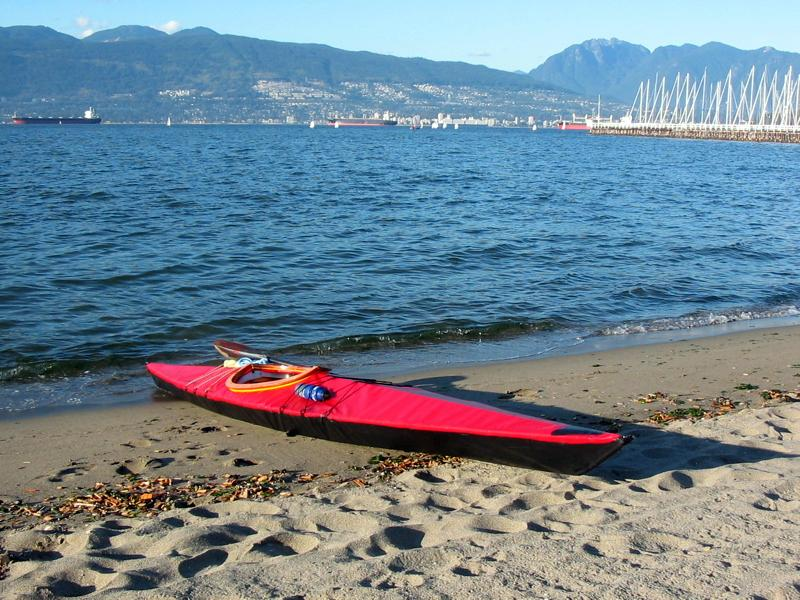

| (New) Sea Tour 15 by Oliver Pitts (CA) | Menu Previous Page Next Page |
|
 Oliver Pitts from Vancouver, British Columbia displays his Sea Tour 15 ( 15ft X 22in / 4.57m X 56cm) at Jerico Beach in Vancouver. Oliver reports the following about the Sea Tour 15....."The Sea Tour has very good initial and secondary stability, responds well to leaned turns, and tracks well even in windy conditions. After enjoying the feel of the frame flexing on the waves, I don't think I'll ever want to go back to paddling rigid sea kayaks. On my Sea Tour, I used plywood coated with marine epoxy for the coaming and cross sections #1 and #6 (with HDPE clips) to cut down on the amount of HDPE". |
|